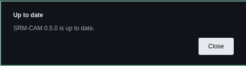
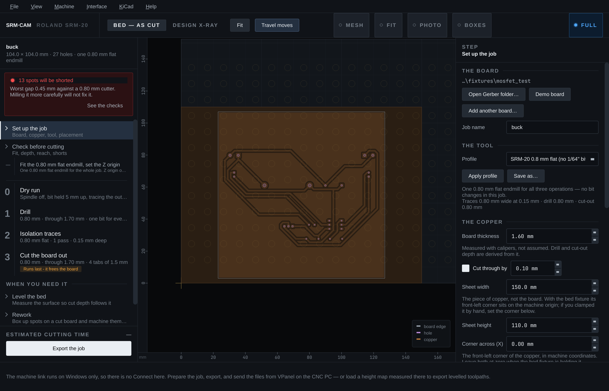
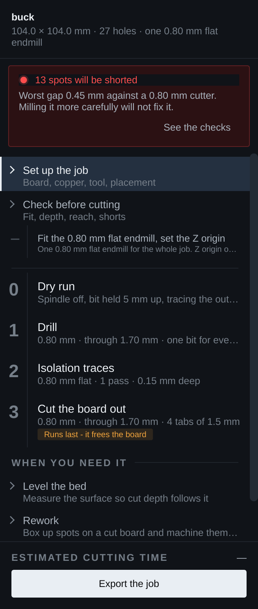
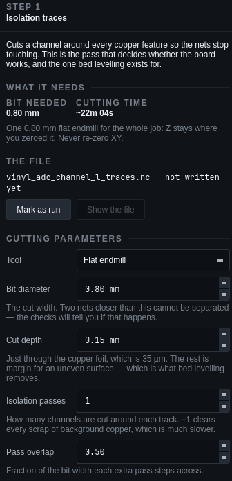
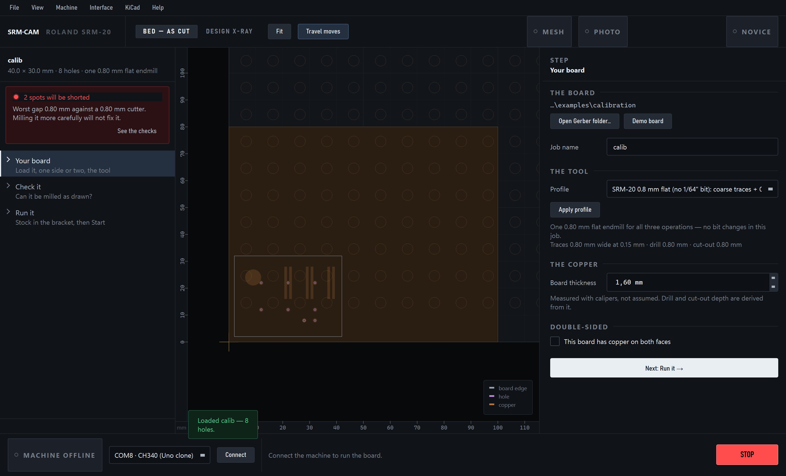
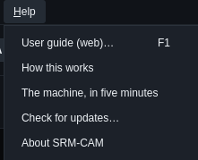
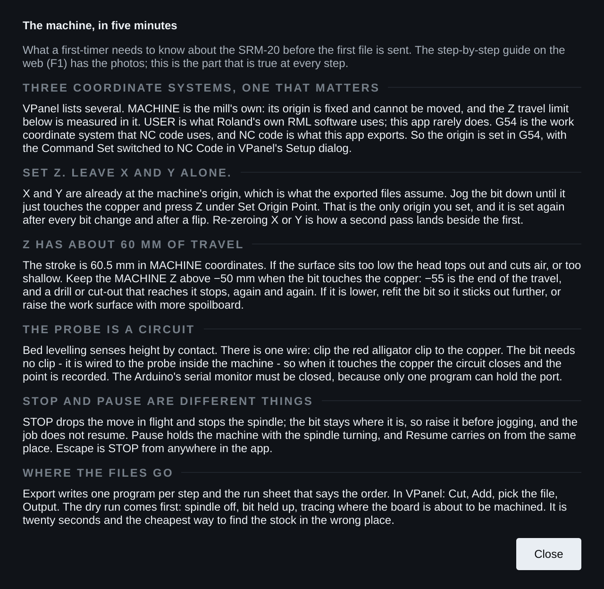
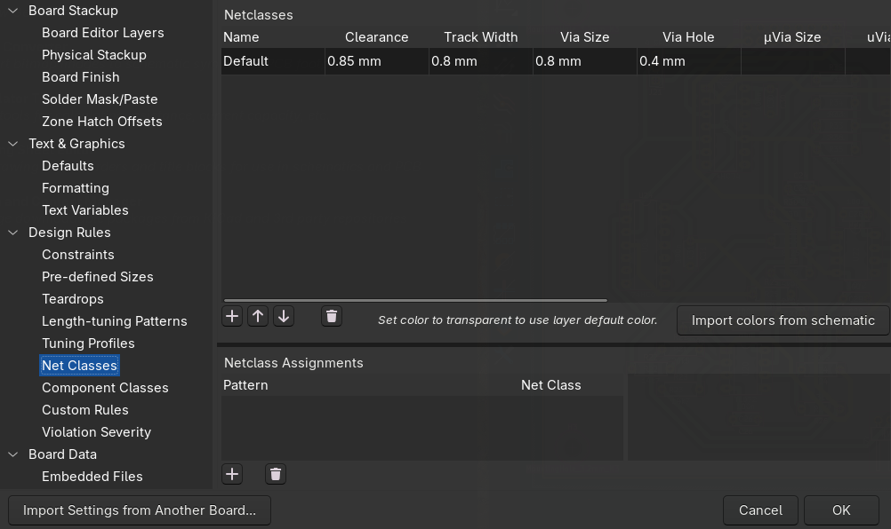
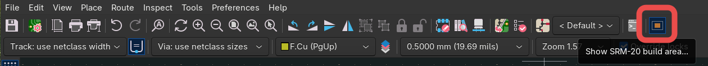
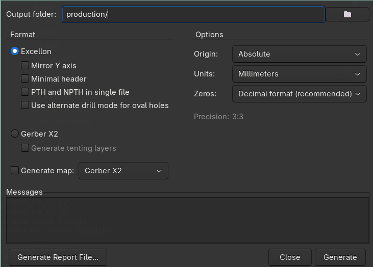

Install & KiCad
First Roland's driver (required, once per PC), then SRM-CAM. Learn the four regions of the window and Novice and Pro, and get the right files out of KiCad. Then go on to Mill a board.
Required before first use: Roland's driver
SRM-CAM cannot talk to the SRM-20 until the Roland driver is installed. Windows needs it to see the mill at all. When the driver is installed, the mill shows up as a printer called Roland SRM-20, and SRM-CAM sends the job to that printer. Without it, Start stops with “The Roland SRM-20 printer is not installed on this PC”.
The driver is the only thing you must install. Download it from Roland before you plug the mill into the PC. Roland's VPanel is optional: the run in SRM-CAM sends the job itself, in Novice and in Pro, and does not use it. See when you want VPanel.
Download
It is on Roland DG's official download page for the SRM-20 (the monoFab SRM-20). Open it on the Software tab:
downloadcenter.rolanddg.com/SRM-20
| Download | Pick this one | Notes |
|---|---|---|
| monoFab Driver | Windows 10 64-bit, Ver. 2.12 (2024-10-17). On a 32-bit Windows 10, the 32-bit one. | This is the SRM-20's driver; Roland calls it the monoFab Driver. Ver. 2.11 and later support Windows 11 and 10 (Roland's guide uses the Windows 10 folder for both). Windows 8 and 7 are no longer supported. Ver. 2.11 also fixed jobs not being output after a 2024 Windows update, so do not use an older driver. |
| VPanel for SRM-20 (optional) | Installer, Ver. 1.10 (2015-07-01) | Not needed for the automatic run. A 32-bit program, which runs on 64-bit Windows 10 and 11. The Updater beside it is for upgrading an older VPanel. |
Roland asks you to accept its software licence before the download, so there is no file link to paste here: click through on Roland's page. You get a zip file. Roland's own step-by-step guide is the Roland DG startup page for the SRM-20, and the steps below follow it.
Install the driver
The order matters. Do not connect the mill's USB cable to the PC until step 8. Plugging it in early can make the driver impossible to install.
- Log on as an administratorIf an older driver for the SRM-20 is installed, uninstall it first (Roland says to do this before installing 2.12): run
SETUP64.exefrom the old driver's folder, click Uninstall, pick the machine, click Start and restart the PC. - Unzip the driverUnzip the file you downloaded and open the folder it makes.
- Open the folder for your Windows
WIN10X64for 64-bit Windows 11 and 10,WIN10X86for 32-bit Windows 10. The wrong folder cannot install the driver. - Run the setupDouble-click
SETUP64.exe(64-bit) orSETUP.exe(32-bit). If Windows asks User Account Control, click Yes. - Pick the modelClick Install, choose SRM-20 as the Model and USB as the port, and click Start.
- Follow the installerAccept the licence, click Install (once in the installer, once in the Windows security window), then Finish.
- Power the millPlug in the mill's power cable and AC adapter, close the front cover and press the power button. Wait until the green light stops flashing and stays lit: that is the start-up finished.
- Now connect the USB cableUse the USB cable that came with the mill (the white one), straight into the PC: no USB hub and no extension cable. Windows finishes installing the driver. Do not unplug it until that is done.
- Check itOpen . The SRM-20 must be listed under Printers. If it is not, or it shows as Unspecified, see Troubleshooting.
VPanel (optional)
SRM-CAM does not need VPanel to cut a board: with the driver installed, the automatic run sends the job to the mill itself. Install VPanel only if you want one of these:
- Pro, by hand: you export the files and play them from VPanel, as in Milling a board.
- The mill's own settings: the command set must be NC Code and the G54 X/Y origin must be machine 0, 0. They are stored in the mill, so a mill that is already set up needs nothing. If a run stops and names one of them, VPanel is where you change it on Windows.
- Unzip and runUnzip the VPanel file, double-click
setup.exein the folder, and follow the installer. - Start it in the right orderClose the mill's front cover, switch the mill on and wait for the light to stay lit, then open . If VPanel was opened with the mill off, switch the mill on and click Retry.
- Set it upIn VPanel, must be NC Code and the G54 X/Y origin must be machine 0, 0. The run stops before it cuts if either is wrong; see Mill a board.
No driver and no VPanel: the kernel already knows the mill. Plug in both USB cables (the mill's and the Arduino's), then use once; it asks for your password. SRM-CAM sets the Command Set itself before a run.
Install SRM-CAM
| Platform | Get it | Notes |
|---|---|---|
| Windows | SRM-CAM-Setup.exe | No Python needed. Start-menu entry, Documents\SRM-CAM\ workspace. Install a new version over the old one; setups and profiles survive. |
| Linux | SRM-CAM-x86_64.AppImage from the latest release | chmod +x, run. No install, no root; it carries its own Qt. Runs the mill too, with no driver: once, . |
| From source | pip install -e ".[gui]" then python -m gerber2rml | After a git pull, python -m gerber2rml.doctor installs anything new. |
No PC at the mill?
The lab's CNC PC has SRM-CAM and VPanel on it. If it isn't free, install both on your own Windows laptop (the link and VPanel are Windows-only) and plug in the two USB cables yourself.
Staying current
The app checks GitHub for a newer release a moment after it opens and says so once, with the download link. asks any time. It never installs anything by itself: you download the new file and install it the same way as the first time.

The first interface is still shipped: SRM-CAM --original from an install, python -m gerber2rml.gui from source. Same engine, same files.
Workspace folders
| Folder | Contents |
|---|---|
Documents\SRM-CAM\sessions | Setups (.srmcam) and height maps (.csv) |
Documents\SRM-CAM\exports | Exported .nc / .rml files and the run plan |
Documents\SRM-CAM\photos | Board photos for the overlay |
Documents\SRM-CAM\gui2.log | Where a start-up problem ends up when there is no console. Read it first if the window never opens. |
The window
Four regions that never move, and a header. Tap one to see what it is for; tap a step on the rail and the stage draws its toolpath, as the app does.

- The header (top): the chip at the left says how the board is made (click it to choose another), CNC / Laser switches between the mill's page and the laser's, and the tier chip at the right switches Novice and Pro. The status chips (Mesh, Fit, Photo, Boxes) only show once they are lit.
- The rail (left) is the plan, for both machines, in groups: On the mill (the run), One step at a time (Pro only, folded shut under the run: click it to open it; each mill step has Run this step on the mill, which finds the stock, probes and cuts that step alone), On the laser and When you need it. Rows that run on a machine carry a MILL or LASER tag; picking a laser row opens the laser page beside the rail. Click any row at any time; nothing is locked. A finding that matters stays on the red banner until it is fixed. At the foot of the rail: Export for VPanel… in Pro, Save the files… in Novice.
- The stage (middle) is the bed in machine coordinates: the copper sheet, the board, the toolpaths of the selected step, the spoilboard's screw grid. Drag the board, or tap the arrow keys to nudge it 0.1 mm (Shift 1 mm, Ctrl 0.01 mm). Scroll to zoom, right-drag to pan.
- The bed's toolbar (above the stage): Turn left, Turn right, Mirror, Centre (on the copper once it is set, otherwise on the bed), Undo (Ctrl+Z takes back any of them), Photo ▾, Bed — as cut / Design X-ray, Fit and Travel moves. Bed — as cut is the only frame the machine understands; Design X-ray is for checking that the two faces of a double-sided board register.
- The inspector (right) shows the selected step: the setup page, the checks, or a step's parameters, estimate and file.
- The machine bar (bottom) is always there: Connect and the port, the position readout (always machine coordinates), the jog pad, View, Probe Z, Pause, Click to jog, and STOP. Esc stops the machine from anywhere, including with a dialog open.



Novice & Pro
Two tiers. Click the tier chip at the top right of the window to switch, or use / . Novice is the default and is built around one thing: Mill a board. Pro runs the same run and has everything else too. It is the same program and the same plan, and exported files are identical in both.
| Novice | Pro | |
|---|---|---|
| Rail | Your board, Check it, the run, and the laser's rows | The same, plus every step one at a time |
| How it cuts | The run, sent directly to the mill | The same run, or files you play from VPanel |
| The stock | Held in the corner bracket | The bracket, or anywhere: the probe finds its corner. Or clamped or screwed, by hand |
| Levelling | Part of the run | Also its own page, and by hand |
| Double-sided | One tick | Fiducials or dowels, every setting |
| Cutting parameters | From the tool profile | Per operation, and your own profiles |
| Also only in Pro | — | Export for VPanel, Fix spots, several boards on a sheet, drilling a board made elsewhere, output format, machine test, simulated mill |
| Both | The pre-flight checks, the jog pad and arrow keys, Click to jog, and STOP | |
lists it in the app. A lab that wants the profile fixed sets SRM_CAM_MODE to novice or pro in the environment or the shortcut.



The machine, in five minutes
is the part that is true at every step: VPanel's three coordinate systems and why G54 is the one that matters; zero Z and leave X and Y alone; keep machine Z above −50 mm with the bit on the copper (−55 is the end of the travel); the probe's one wire, the red clip on the copper; STOP against Pause; and where the files go.

Files from KiCad
in SRM-CAM adds three buttons to KiCad's PCB editor:
- Show SRM-20 build area draws the mill's build area around your board and says whether it fits.
- Set design rules for SRM-CAM: choose how the board is made (flat mill, ball mill or fiber laser), and it sets the clearances and track widths for that. SRM-CAM reads the choice when it opens the board: see How it is made.
- Send to SRM-CAM plots every layer SRM-CAM reads (copper, outline, mask, silkscreen and paste) with the drill files, checks the board against its method, and opens it in SRM-CAM. A board with no method set is checked against the one its own rules point to.
By hand: set the net class clearance to at least the width of the bit (): a 0.8 mm endmill cannot enter a gap narrower than 0.8 mm. The app's checks list every gap that is too narrow for the method, but it is quicker to fix before routing.



- Plot Gerbers : at least B.Cu and Edge.Cuts (and F.Cu for double-sided), into one folder. Add the mask, silkscreen and paste layers if the board will get solder mask, silkscreen or a stencil on the laser: each one adds a row to the rail. If KiCad asks to refill the zones, say yes. Send to SRM-CAM does all of this in one press.
- Drill files Same dialog, Generate Drill Files…: Excellon, millimetres, into the same folder. KiCad writes the plated and unplated holes as two files; keep both.
- Open In SRM-CAM, (Ctrl+O) picks up the layers and the drills and names the job after the KiCad project.


Demo board on loads a bundled 40×30 mm coupon that exercises every operation.
Setups
(Ctrl+S) writes one .srmcam file with everything: the boards and where they sit, the tool, the copper sheet, the screws, the height maps of both faces, the measured flip. brings it back. A setup written by the first interface loads too.
A probed height map is minutes of machine time. Save the setup right after probing; the map is in it.
Reach out to Mads Rudolph, or to the TAs of the course, if you need guidance with the milling.